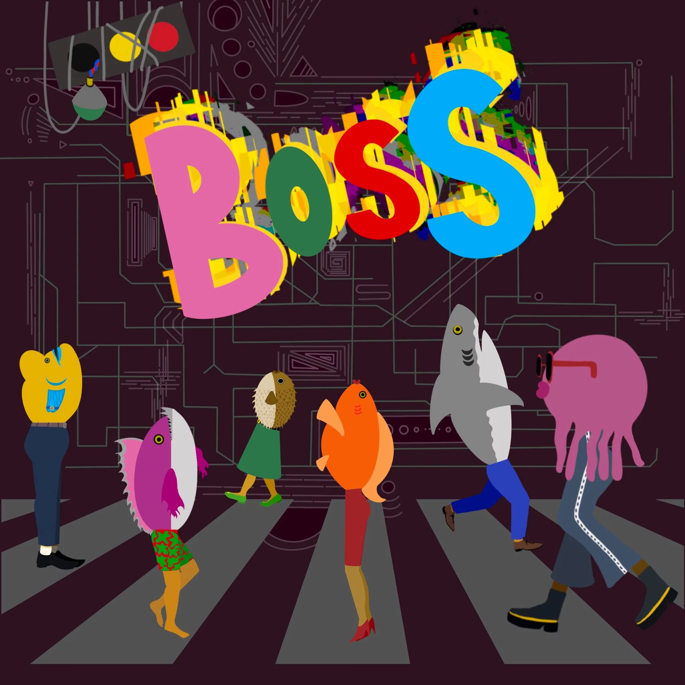

BOSS
Digital Single — written, composed, produced and mixed by QRIAN
Digital Single [BOSS] released on 5th October 2023
Executive Produced by QRIAN Written, Composed, Performed, Produced and Mixed by QRIAN
Related Press
- '« BOSS » : QRIAN dévoile une chanson captivante et délicate' IGGY Magazine ↗
- 'Alternative Pop from QRIAN' Plastic Magazine ↗
- 'on the radar: artistas que você precisa conhecer' Medium, You! Me! Dancing! ↗
Related Broadcast
- 'Story and Song' iHeartRadio
- 'Formula Indie', 'Formula Indie Asia, Africa & Oceania' European Indie Music Network source ↗ source ↗
- 'Lord Litter's Magic Music Box International' KOWS Community Radio ↗